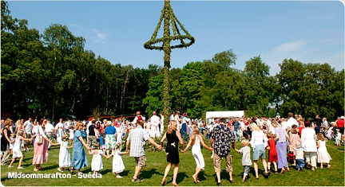
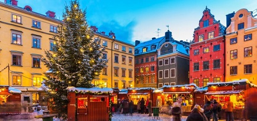

Os costumes da Suécia são muito similares aos do restante da Europa. Como em muitos países da Escandinávia, existe a regra de tirar os sapatos ao entrar nas casas. Isto tem uma finalidade prática, mais que tradicional: como o clima muitas vezes é úmido e pode haver neve, é melhor evitar sujar a casa.
Os fumantes têm um cenário complicado. Na Suécia não é permitido fumar em nenhum estabelecimento fechado, seja restaurante, hotel e até mesmo nos bares.
O país tem uma tradição pacifista e tolerante. Não há guerras desde 1814, por exemplo. É o país industrializado que, em relação à sua população, acolheu mais refugiados. Além disso, é o país anfitrião do Prêmio Nobel.
Para os suecos umas das coisas mais importantes para eles são os feriados pois não, pois levam a os feriados muito a serio.
O solstício de verão é comemorado no solstício de verão - o dia mais longo do ano. Como um país do norte, a Suécia tem um longo período de luz do dia e, nas regiões mais ao norte do país, o sol nunca se põe. A luz do dia prolongada leva a festas prolongadas, enquanto os suecos se reúnem no campo para comemorar. Tradicionalmente, os suecos usam coroas de flores e dançam em torno de um mastro e comem várias refeições, bebendo aguardente acompanhada de canções barulhentas.

Logo após o solstício de inverno, os suecos terminam o ano reunindo-se com familiares e amigos para celebrar o Natal em suas casas. Embora a culinária varie dependendo da região e da família, os pratos típicos incluem presunto, almôndegas, arenque, pão duro e vinho quente. Uma tradição única que muitos suecos adotam é reunir-se em frente à televisão para assistir a um especial de Natal da Disney à tarde que foi ao ar por décadas. Como as celebrações de Natal em todo o mundo, os suecos trocam presentes com a adição de rimas como pistas que são lidas em voz alta antes de cada presente ser aberto.
